Overview
This document discusses the tasks carried out to implement the requirements for the portfolio assignment. The project was carried out as a team, but this document is a personal reflection of how the project was carried out, while it emphasises the personal contribution to the project.
the document presents the project requirements, a design of first thoughts about how it will be implemented, the application of reverse engineering tools, a review of available tools for its implementation, justification for using one of the presented tools, software methodology used, prototype development, finishing, and finally, reflection and conclusion.
Project Artifact
Background
Background
This model that was developed in this project was inspired by the droid character in the popular movie series Star Wars, called R2-D2. The R2-D2 droid is a fictional character in the Star Wars franchise (Chavez-Antezana and Arbaiza, 2022), which was created George Lucas. The droid character was a close friend with another robot called C-3PO. R2-D2 has appeared in every theatrical Star Wars film. Although influenced by the peasant Matashichi from Akira Kurosawa's 1958 feature film named The Hidden Fortress, which was released in the United States in 1962, it bears a completely the opposite behaviour. Other sources of inspiration for the character include robots name Huey, Dewey, and Louie, drawn from the Douglas Trumbull 1972 film named Silent Running.
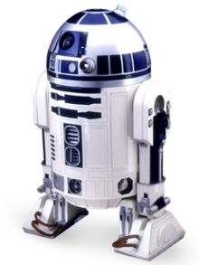
Design
From a more detailed perspective, the challenges to modelling the character became more obvious. The details in the different body parts was evident. Due to the fact that there was no available physical model of the robot, a reverse engineering approach seemed unlikely. The availability of the resoures to implement a reverse engineering approach was also a problem as the tools were not necessarily available for access in the available time for implementation. Based on this, the team determined that building a model from a sketch of the real object would be the best way to proceed. This lead to a preparatory phase, where we needed to draw sketches and attempt to understand the structure of the droid and to develop a design for implementing it.
On first analysis of the R2-D2 droid character, it becomes obvious that the character composes of a few major shapes. Roughly, its head consists of half of a sphere, the body could be represented with a cylinder with its edges bevelled, while its legs consist of small triangular blocks extending off hydralic arms that could be build with elongated cubes.
| No |
Tasks |
Must |
Should |
Could |
Won't |
| 1 |
Explore opportunity for reverse engineering modelling |
X |
|
|
|
| 2 |
Reverse engineer a droid character |
|
|
|
X |
| 3 |
Analyse droid structure and identify modelling options |
X |
|
|
|
| 4 |
Design prototype of final droid |
X |
|
|
|
| 5 |
Build 3D model of prototype |
|
X |
|
|
Reverse Engineering
According to (Lutkevich, 2018), reverse engineering involves a process of examination of an existing product with the goal of obtaining detailed information that could be sufficient for understanding how the product works.
Reverse engineering is useful in many sectors, especially in software development, such as for creating Rich Internet Applications (RIA), which are web applications that offer greater interactivity for users (Amalfitano et al., 2008).
During the analysis and review of the droid character, we concluded that a reverse engineering approach to be insufficient because the physical droid and its measurements could not be obtained in time to be useful in the completion of the work. The rest of the document therefor focuses on the process to determine best tools for modelling and building the droid character.
Review of Tools and Benefits
This section discusses the exploration of tools to development and model the droid character. Through testing and exploration, we were able to determine the usefulness of the tools to achieve our purpose.
-
3D Scanning - HandySCAN
3D scanning involves the direct scanning of a physical object, which is already available to access. 3D scanning involves the ananlysis of real-world objects in order to obtain data for a three-dimensional analysis of the shape of the object. The data can then be used to reconstruct the object in 3D. The process has a few challenges based on its specific application and tools, such as the use of structured-light 3D scanners and LiDAR. Nonetheless, it has various applications in industry, research, gaming, entertainment, robotic mapping, reverse engineering and prototyping, and visualisation (Biswas and Basu, 2011; Moeslund and Granum, 2001; Wand et al., 2009).
The product that enabled us attempt this approach was called HandySCAN. However, in order to test its viability, we scanned a few objects, and I specifically scanned a keyholder in a block reason. The following image shows what the 3D model looked like after the scan.
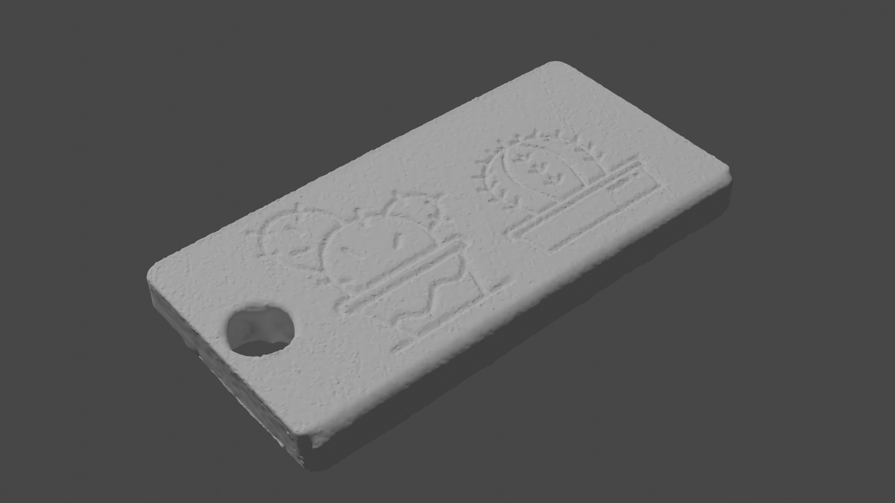
While using the 3D scanner, we attempted to use it to perform some a few scans such as scanning a member's shoe, a resin tab and a transparent plastic cup. Although the entire team beamed with excitement, our discovery of its abilities were not as inspiring as we expected. Its performance was not optimal with respect to producing a physical object that we could use. We eventually had to drop this tool because we determined that its output was not appropriate for use based on our requirements.
-
Lathe
The head (including the arms and legs) needed to be connected to the body and this required that we created connecting holes. The holes would provide opportunity to insert bolts to hold the parts together. We explored using the lathe for building the bolts. In the case of the head, we needed a hole to connect it to the body, while a hole was needed for each limb. However, we encountered challenges using the tools available for the module to create a detailed 40mm long core M5 bolt, with appropriately chamfered and knurled head. We concluded that the only option was to either use the lathe for this purpose or purchase from a store. Unfortunately, we could not achieve this due to the inaccessibility of the lathe for the necessary period.
-
Resin
We also had the option of modelling the parts of the robot using resin approach. Although initially seemingly unsuitable, we decided to evaluate its usefulness for our purposes by creating a key fob. Thus, we prepared the resin equipment and applied the chemicals (P1, P2, colouring - Xencast) and created the key fob using these. We eventually achieved the modeling of the key fob. However, we discovered that it was not suitable for the project requirements. We determined that the resin did not have the appropriate material that could provide a good structure to support the body parts of the android.
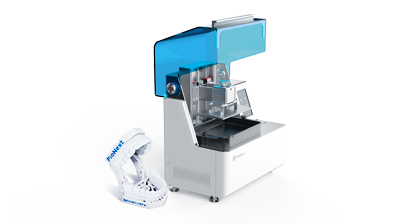
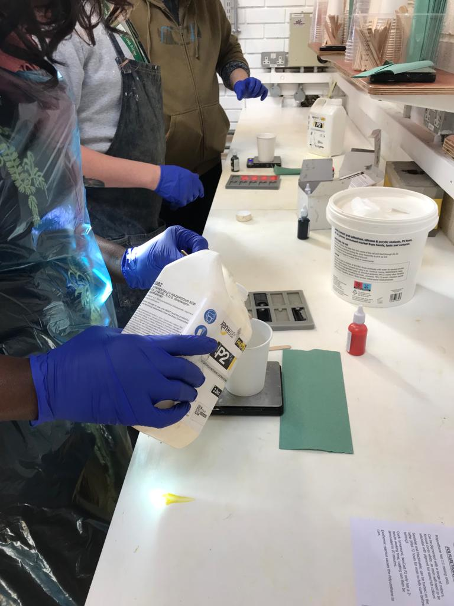
-
Motion Capture
The motion capture approach was exciting to explore as it gave us an outlook into various methods used in movies including the design and animation of characters. We were also thrilled to gain further insight into the extensive use of cameras in such scenes, including hte importance of the position of the characters. This was a very enlightening experience and we were excited to see how it could be useful for our purposes. However, we were unable to progress further with this approach since it was deemed not suitable for our purposes.
We concluded that the movie capture approach was not suitable as it was optimised for developing content which are watched in the movies.
-
Laser Cutter
The laser cutter applies a focused laser beam to melt materials and cut out the target object based on the design. We determined that this tool was not sufficient for our use as the materials required to use in the laser cut could not be obtained in the given time to deliver the project.
-
Haptic Pen
The harpic pen enabled us to practically model content in mid-air. The challenge we initially faced with this tool was the need to imagine what we were modelling while viewing the results on the screen. We realised that it required a steep learning curve to get used to it and this was a drawback for using the tool for our purposes.
 The above image shows the Harpic pen that we used in the evaluation. It is available at the url below: https://www.3dsystems.com/haptics-devices/touch-x
Finally, a challenge we encountered with the harpic pen was that it was with respect to its touch sensitivity. As this required some practise, we considered it a factor in our reasons for not using the tool for our project.
The above image shows the Harpic pen that we used in the evaluation. It is available at the url below: https://www.3dsystems.com/haptics-devices/touch-x
Finally, a challenge we encountered with the harpic pen was that it was with respect to its touch sensitivity. As this required some practise, we considered it a factor in our reasons for not using the tool for our project.
-
Blender 3D
Blender 3D is a free 3d modelling software. It is open source and can be used to create various 3D content such as 3D mesh, animations, 2D painting, motion graphics, virutal reality apps, and video games. It allows users to model 3D content, rigging, skinning, perform UV unwrapping, texturing, raster graphics editing, etc.
As a free product, we were able to download and install the full software on our systems with ease. With Blender, we tried to test out a few ideas by modelling certain simple objects in 3D. Being focused mainly on mesh modelling, Blender presented an enjoyable user interface for manipulating 3D models without the concern for details. Although possible to use Blender’s measurement system for our purpose, we decided to go with Fusion 360. We also discovered that there were other 3D modelling software that were considered more industry standard, such as Maya and Cinema4D (Coggan, 2022).
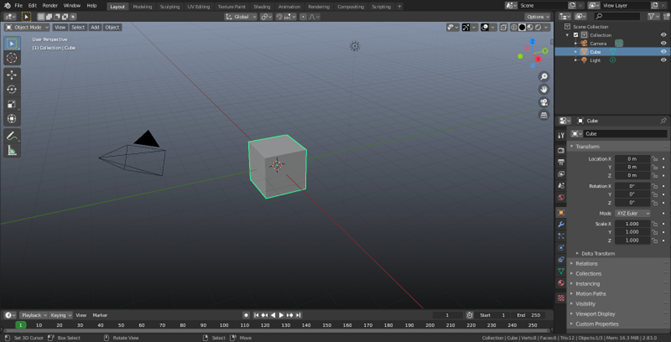
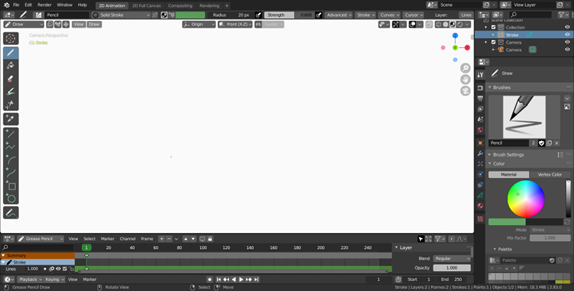
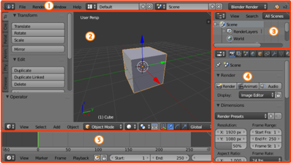
-
Fusion 360
Fusion 360 is a computer -aided deisgn software (CAD), which enables the accurate modelling of 3D content based on given dimensions. Fusion 360 is used on both industry and academics to simulate and model products that would be developed for use in research and on the field (Jaggi et al., 2018).
For our project, we were able to build the specification of the robot on paper and was able to accurately model the robot using Fusion 360. We used Blender to build the more complex In conjunction with Blender 3D, we explored using this tool to model the robot and we did arrive at very useful models.
Software Choice and File Types
As mentioned above, we had the option of using either of Blender 3D or Fusion 360. Some team members had experience with other CAD tools and were quite at home with tools such as Fusion 360. However, for the rest of us who did not have the prior experience with such tools, Blender 3D seemed a more welcomging tool. Personally, I thought it best to combine both tools and focus on their best features. Thus, we eventually used Fusion 360 to model the robot.
Prototype Development
As mentioned in the last section, Fusion 360 was used to develop the prototype of the robot. The software enabled us to apply accurate measurements of the robot based on our concept designs. The following image illustrates the model as shown with the Fusion 360 software.
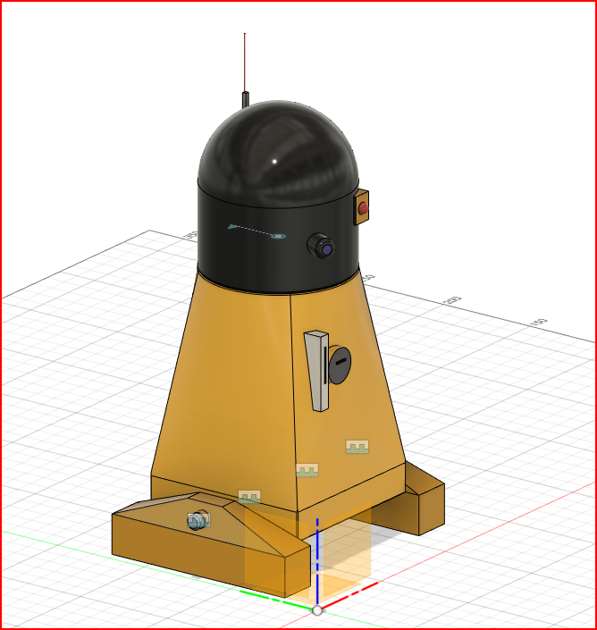
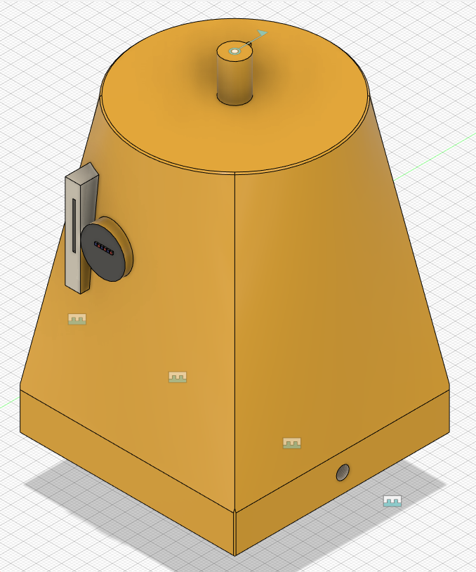
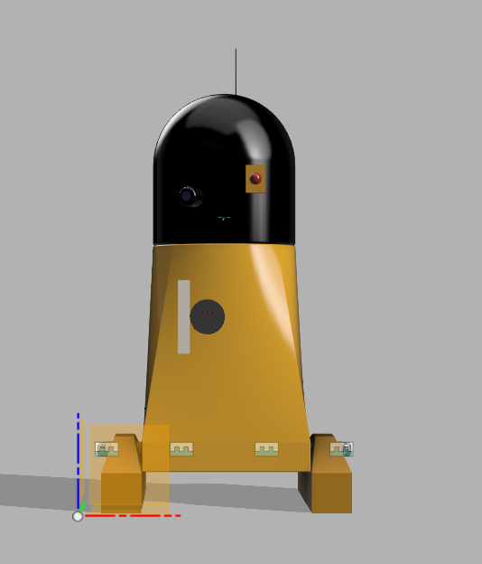
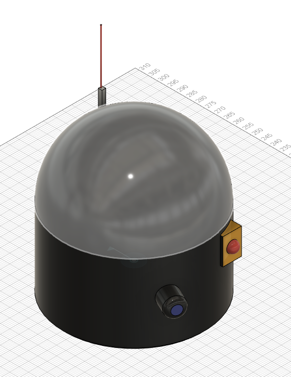
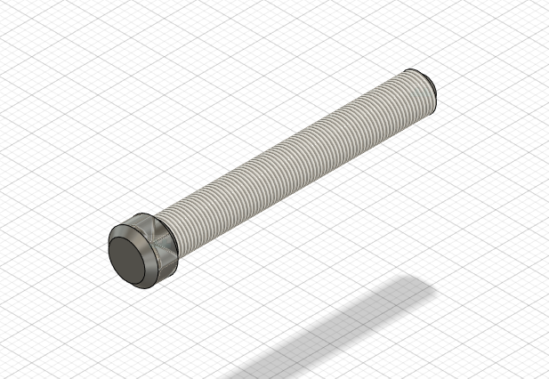
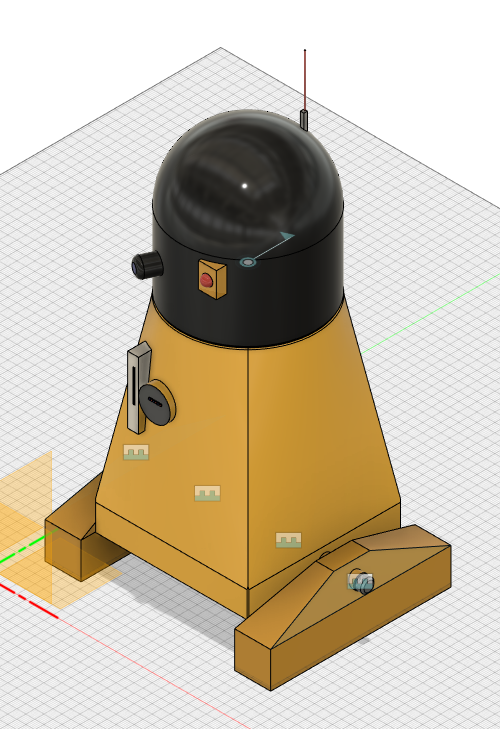
The image shows the the combined model consisting of the head, body and the rollers. The responsibility for modelling the droid was split between team members, with one member doing the head, while the other handled the body and legs.
Upon using the tutorials available in the lectures, I also looked up video tutorials on YouTube. With these, I was able to learn enough to use Fusion 360 to model the body and legs of the droid.
With the body, we started with a cube, built from an extruded plane. we applied bevelling to the sharp edges to improve the usability and safety. We created the circular slot at the top to insert the head object. The head pin was expected to fit near-tightly into the body, and we ensured this by taking measurements. We also ensured that the spacing enabled the head to rotate while not allowing to wobble in its position.
For the feet, we did some preliminary analysis and determined that it was best to build a box-like structure that covered rollers beneath. We designed to insert screw holes on the side of the body that would allow in M5 bolts to secure the leg structure. Thus, with a cube structure elongated from front to back, we created a circular slot for the bolt to go through the leg structure and be able to be screwed into the body. We also bevelled the leg structure to that there are no sharp edges.
The modelling of the M5 bolts to secure the droid parts was handled by another team member who had more understanding of how it should be designed and modelled. In all, four slots were created and thus, four bolts were needed.
We decided that the head would feature a few additions, such as an antenna, eyes, and a few buttons. We tried to include features that would make it resemble the droid in the Star Wars franchise.
Prototype Finishing
On completing the modelling in Fusion 360, we combined all parts in the software and did a look-through of all dimensions to ensure that if printed, all parts would be accurate to design. Afterwards, we did several renders and reviewed the aesthetics and usability of the model, since it would be expected that a human would be interacting with the droid at some point.
Reflection
In reflection, the analysis and design of the droid character was a huge learning process.
The understanding of reverse engineering highlighted an interesting approach in product development and it drew me to the existence of another interesting area of study referred to as digital twins, where a prototype copy of a system, process or object is developed to simulate its working, and thereby providing a testbed for trial and error processes.
The analysis and design of the droid, following the realisation that the details of the original droid was not accessible informed of alternative approaches that could be applied in such scenarios where the original data on a product was not available. Our search for the appropriate software to use was also informative in terms of understanding the many options available for creating 3D content, which are applicable to specific scenarios. In other words, the tools were more suited to specific objectives based on the project.
Our use of some of the tools also provided first-hand experience and understanding of the purpose and usefulness of the tools. This knowledge was crucial for understanding and bridging the gap between not ever trying these tools out and actually producing a product with them.
The experience with using a design to model the droid in a CAD software was also very useful as I was able to transition from concept to analysis to design, and finally to modelling. Since we had used the tools, it was easy to imagine what the outcome would be if we had the opportunity to create a physical model of our droid model.
Overall, the entire project was a very informative experience and enabled me to understand the pipeline process of creating products through 3D modeling means from concept to production.
Conclusion
In conclusion, the project has covered the feasibility study of the potential for modelling a selected character, the Star Wars droid named R2-D2 in this case. It has covered the investigation into avialable tools and the potential for reverse engineering. Since the construction details of the droid was hard to come by, we had to lean towards performing an analysis of the droid from available images and developing a design for our own droid. We then investigated the available tools for creating the droid and eventually concluded on using the CAD software - Fusion 360.
The modelling task was split among team members and the model was built in the Fusion 360 software. On completion we rendered it and reviewed it for usability and aesthetics.
References
Biswas, K.K., Basu, S.K., 2011. Gesture recognition using Microsoft Kinect®, in: The 5th International Conference on Automation, Robotics and Applications. Presented at the 2011 5th International Conference on Automation, Robotics and Applications (ICARA 2011), IEEE, Wellington, New Zealand, pp. 100–103. https://doi.org/10.1109/ICARA.2011.6144864
Chavez-Antezana, A., Arbaiza, F., 2022. The perception of Fornite players about the In-game advertising of film brands: Fortnite x Star Wars Case, in: 2022 17th Iberian Conference on Information Systems and Technologies (CISTI). Presented at the 2022 17th Iberian Conference on Information Systems and Technologies (CISTI), IEEE, Madrid, Spain, pp. 1–6. https://doi.org/10.23919/CISTI54924.2022.9820503
Coggan, G., 2022. The best 3D modelling software in August 2023.
Jaggi, N., Chand, K., Mukhija, P., Guha, P., Chathuranga, K., Lalitharathne, S., Kulasekera, A.L., Gopura, R., 2018. Design and Simulation of Autonomous Fire Fighting Robots for Forests, in: 2018 4th International Conference on Computing Communication and Automation (ICCCA). Presented at the 2018 4th International Conference on Computing Communication and Automation (ICCCA), IEEE, Greater Noida, India, pp. 1–5. https://doi.org/10.1109/CCAA.2018.8777618
Lutkevich, B., 2018. reverse-engineering. IEEE Glob. Spec.
Moeslund, T.B., Granum, E., 2001. A Survey of Computer Vision-Based Human Motion Capture. Comput. Vis. Image Underst. 81, 231–268. https://doi.org/10.1006/cviu.2000.0897
Wand, M., Adams, B., Ovsjanikov, M., Berner, A., Bokeloh, M., Jenke, P., Guibas, L., Seidel, H.-P., Schilling, A., 2009. Efficient reconstruction of nonrigid shape and motion from real-time 3D scanner data. ACM Trans. Graph. 28, 1–15. https://doi.org/10.1145/1516522.1516526